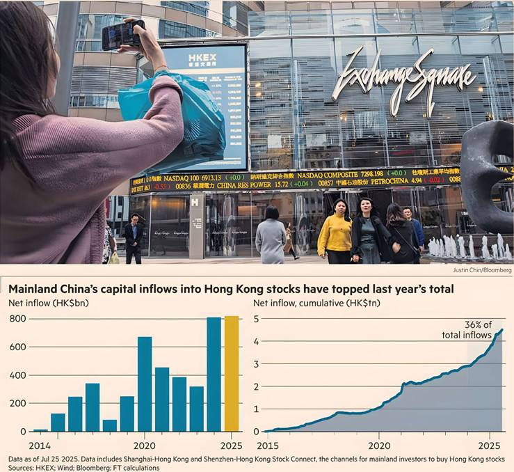

WILLIAM SANDLUND AND HAOHSIANG KO — HONG KONG
THOMAS HALE — SHANGHAI
Chinese investment flows to Hong Kong through the Stock Connect programme have hit a record high as mainland capital drives a revival of the territory’s equities market.
About HK$820bn (US$104bn) of Chinese money has been invested this year through Stock Connect, which links the mainland’s stock exchanges to Hong Kong’s, surpassing 2024's full-year inflow of HK$807.9bn.
The surge has helped end a post-Covid slump in Hong Kong’s financial markets and underlines how the city’s fortunes have become increasingly dependent on policy in Beijing and on Chinese capital.
It also points to a growing appetite among Chinese investors to put money to work outside the mainland’s tightly controlled financial system, as yields on government bonds have fallen to record lows amid an uncertain economic backdrop.
“Domestic investors are now waking up to the opportunity offshore,” said Jason Lui, head of Asia-Pacific equity and derivative strategy at BNP Paribas. “If you're [Chinese] institutional investors, you have no choice but to start looking outward. There’s actually limited choices for where you can go.”
The Stock Connect programme, which started in 2014, allows Chinese retail investors with at least Rmb500,000 ($70,000) to access Hong Kong’s financial markets without violating China’s strict capital controls.
Cumulative investment into Hong Kong through Stock Connect has reached HK$4.5tn, with more than a third of inflows occurring in the past two years. Southbound transactions now make up about a quarter of daily turnover on the Hong Kong exchange’s main board, compared with well below 10 per cent on most days in 2019.
The programme is one of the only ways Chinese investors can buy shares of technology companies such as Alibaba, Baidu and Tencent, which are listed in Hong Kong but not in the mainland. Their shares have rallied sharply this year following the release of a groundbreaking artificial intelligence model by Chinese start-up DeepSeek and signs of easing tensions between China’s tech sector and regulators.
Hong Kong’s listings pipeline has hit a record high this year as mainland companies pursue secondary listings in the city. “The Hong Kong stock exchange has become the main platform for mainland companies to raise offshore capital,” said David Tsai, a partner at law firm Clifford Chance.
Hong Kong’s turnaround has helped rekindle investor interest in Chinese businesses that were hit by a government crackdown on the private sector and a property market slowdown now in its fourth year.
“The longer-term outlook for Hong Kong has improved,” said James Wang, head of China equity strategy at UBS. “You're not hearing investors saying: ‘Is China investable any more?’ That kind of rhetoric is well and truly behind us.”